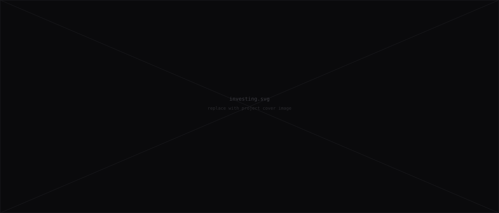
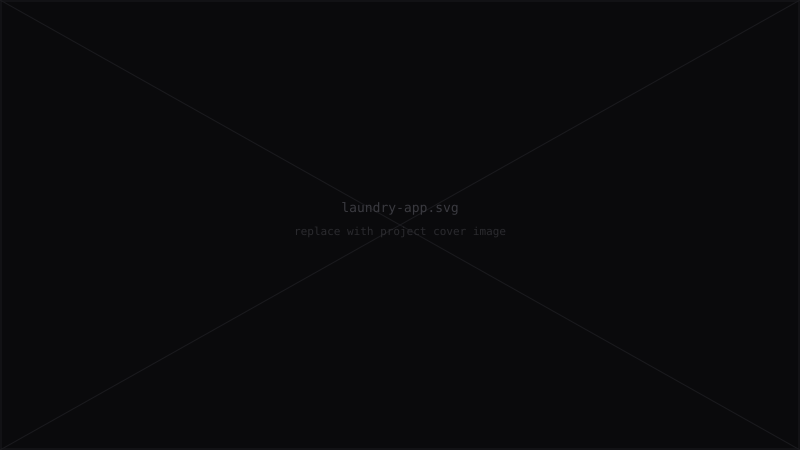
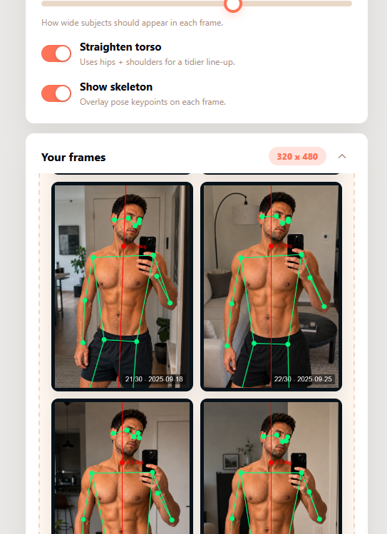

Personal index 2026
Vibe coded with AI
I built these small apps to solve some of my own problems and to stay in the loop of AI development during my sabbatical.
Scroll
01 — Selected work
A few experiments
that escaped the tab graveyard.
Finance

Investing
/01A small reasoning tool that helps you decide when you can actually fire
App · iOS

LaundryApp
/02Track laundry business day to day activities.
Local AI

GymProgress
/03A way to track gym progress on device. Snap a mirror photo every week then a small model reads the silhouette, posture, and composition trends. Photos never leave your device.
02 — About
I'm interested in software that respects your data, uses free technologies and runs locally.
I build small, opinionated tools for myself, then share them online in case they are useful for someone else.
- Stack
- Vanilla JS, HTML, CSS, TS
- Tools
- Codex, Claude, the terminal
- Ethos
- Local-first · No ads · Minimal dependencies
03 — Open source
Patches, forks, and the occasional issue nobody asked for.
01
github.com/jlchapa/repo-1
Self-hosted retirement calculator
→
02
github.com/jlchapa/repo-2
Household laundry tracker
→
03
github.com/jlchapa/gym-progress
On-device progress tracking from photos
→
04
github.com/jlchapa
My terminal, lightly opinionated
→
05
github.com/jlchapa/portafolio
This lil portafolio
→